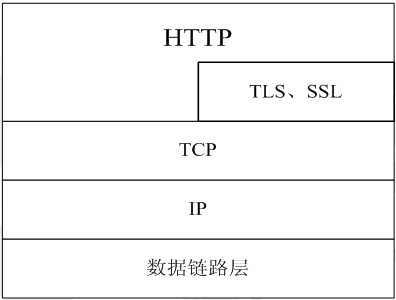
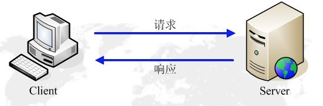

HTTP、TCP/IP、Scoket
2016-03-16 23:10:13
HTTP
HTTP协议（HyperText Transfer Protocol，超文本传输协议）是用于从WWW服务器传输超文本到本地浏览器的传送协议。它可以使浏览器更加高效，使网络传输减少。它不仅保证计算机正确快速地传输超文本文档，还确定传输文档中的哪一部分，以及哪部分内容首先显示（如文本先于图形）等。
HTTP是一个应用层协议，由请求和响应构成，是一个标准的客户端服务器模型。HTTP是一个无状态的协议。
HTTP协议通常承载于TCP协议之上，有时也承载于TSL或SSL协议层之上，这个时候，就成了我们常说的HTTPS。默认HTTP的端口号为80，HTTPS的端口号为443。如下图所示：

HTTP的请求响应模型
HTTP协议上永远都是客户端发起请求，服务器回送响应。见下图：
这样就限制了使用HTTP协议，无法实现在客户端没有发起请求的时候，服务器将消息推送给客户端。HTTP协议是一个无状态的协议，同一个客户端的这次请求和上次请求是没有对应关系。
七层网络
所谓的网络七层协议就是OSI模型，具体分为：应用层、表示层、会话层、传输层、网络层、数据链路层、物理层。
第一层，物理层>OSI模型最低层的“劳苦大众”。它透明地传输比特流，就是传输的信号。该层上的设备包括集线器、发送器、接收器、电缆、连接器和中继器
第二层，数据链路层>这一层是和包结构和字段打交道的和事佬。一方面接收来自网络层（第三层）的数据帧并为物理层封装这些帧；另一方面数据链路层把来自物理层的原始数据比特封装到网络层的帧中。起着重要的中介作用。
第三层，网络层>这一层干的事就比较多了。它工作对象，概括的说就是：电路、数据包和信息交换。网络层确定把数据包传送到其目的地的路径。就是把逻辑网络地址转换为物理地址。如果数据包太大不能通过路径中的一条链路送到目的地，那么网络层的任务就是把这些包分成较小的包。这些光荣的任务就派给了路由器、网桥路由器和网关。以后几层属于较高层，通常驻留在跨网络相互通信的计算机中，而不象以上几层可以独自为阵。设备中只有网关可跨越所有各层。
第四层，传输层>确保按顺序无错的发送数据包。传输层把来自会话层的大量消息分成易于管理的包以便向网络发送。
第五层，会话层>在分开的计算机上的两种应用程序之间建立一种虚拟链接，这种虚拟链接称为会话（session）。会话层通过在数据流中设置检查点而保持应用程序之间的同步。允许应用程序进行通信的名称识别和安全性的工作就由会话层完成。
第六层，表示层>定义由应用程序用来交换数据的格式。在这种意义上，表示层也称为转换器（translator）。该层负责协议转换、数据编码和数据压缩。转发程序在该层进行服务操作。
第七层，应用层>该层是OSI模型的最高层。应用层向应用进程展示所有的网络服务。当一个应用进程访问网络时，通过该层执行所有的动作。 纵观七层，从低级到高级。作一个形象的比喻就是从汇编到了BASIC，越到高层与硬件的关联就越弱。
七层模型在Windows程序下的体现
七层模型在Windows程序下的体现：
物理层----就是我们看得见的网卡。网卡的作用就是把线路发送过来的高频电流转化数据包，然后传给网卡驱动程序，同是也把网卡驱动程序传送过来的数据包转化成电信号传送出去。定义通过网络设备发送数据的物理方式：是网络媒介和设备间的接口。
数据链路层----是网卡驱动程序。定义控制通信连接的程序；封包；监测和改正包传输错误。
网络层----即NDIS，NDIS提供网络接口。决定网络设备间如何传输数据；根据唯一的网络设备地址选择包；提供流和拥塞控制，以阻止同时网络资源的损耗。
传输层----即TCP，TCP协议的封包处理是在这一层进行的。管理网络中首尾连接的信息传送；提供通过错误恢复和流控制装置传送可靠且有序的包；提供无连接面向包的传送。
会话层----即SPI，SPI是服务提供者接口，管理用户间的会话和对话；控制用户间的连接和挂断连接；报告上层错误。
表示层----API，它为应用程序提供接口。API负责SPI与应用程序之间的通信；定义不同体系间不同数据格式；具体说明独立结构的数据传输格式；编码和解码数据；加密和解密数据；压缩和解压缩数据。
应用层----EXE，就是大家常见的应用程序。定义用于网络通信和数据传输的用户接口程序；提供标准服务，比如虚拟终端、文档以及任务的传输和操作。
TCP/IP和HTTP
我知道IP协议对应于网络层，TCP协议对应于传输层，而HTTP协议对应于应用层，三者从本质上来说没有可比性，Socket则是对TCP/IP协议的封装和应用。也可以说，TCP/IP协议是传输层协议，主要解决数据如何在网络中传输，而HTTP是应用层协议，主要解决如何包装数据。
我们在传输数据时，可以只使用(传输层)TCP/IP协议，但是那样的话，如果没有应用层，便无法识别数据内容。
如果想要使传输的数据有意义，则必须使用到应用层协议。应用层协议有很多，比如HTTP、FTP、TELNET等，也可以自己定义应用层协议。
WEB使用HTTP协议作应用层协议，以封装HTTP文本信息，然后使用TCP/IP做传输层协议将它发到网络上。而我们平时说的最多的Socket是什么，实际上Socket是对TCP/IP协议的封装，Socket本身并不是协议，而是一个调用接口(API)。通过Socket，我们才能使用TCP/IP协议。实际上，Socket跟TCP/IP协议没有必然的联系。Socket编程接口在设计的时候，就希望也能适应其他的网络协议。所以说，Socket的出现只是使得程序员更方便地使用TCP/IP协议栈而已，是对TCP/IP协议的抽象，从而形成了我们知道的一些最基本的函数接口，比如create、listen、connect、accept、send、read和write等等。
Socket和TCP/IP
TCP/IP只是一个协议栈，就像操作系统的运行机制一样，必须要具体实现，同时还要提供对外的操作接口。
这个就像操作系统会提供标准的编程接口，比如win32编程接口一样，TCP/IP也要提供可供程序员做网络开发所用的接口，这就是Socket编程接。实际上，传输层的TCP是基于网络层的IP协议的，而应用到的HTTP协议又是基于传输层的TCP协议，而Socket本身不算是协议，就像上面所说，它只是提供了一个针对TCP或者UDP编程的接口。
TCP连接的三次握手
第一次握手:客户端发送syn包(syn=j)到服务器，并进入SYN_SEND状态，等待服务器确认。
第二次握手：服务器收到syn包，必须确认客户的SYN(ack=j+1)，同时自己也发送一个SYN包(syn=k)，即SYN+ACK包，此时服务器进入SYN_RECV状态。
第三次握手：客户端收到服务器的SYN+ACK包，向服务器发送确认包ACK(ack=k+1)，此包发送完毕，客户端和服务器进入ESTABLISHED状态，完成三次握手。
握手过程中传送的包里不包含数据，三次握手完毕后，客户端与服务器才正式开始传送数据。理想状态下，TCP连接一旦建立，在通信双方中的任何一方主动关闭连接之前，TCP连接都将被一直保持下去。断开连接时服务器和客户端均可以主动发起断开TCP连接的请求，断开过程需要经过“四次握手”
TCP和UDP的区别
TCP是面向链接的，虽然说网络的不安全不稳定特性决定了多少次握手都不能保证连接的可靠性，但TCP的三次握手在最低限度上(实际上也很大程序上保证了)保证了连接的可靠性；而UDP不是面向连接的，UDP传送数据前并不与对方建立连接，对接收到的数据也不发送确认信号，发送端不知道数据是否会正确接收，当然也不用重发，所以说UDP是无连接的，不可靠的一种数据传输协议。
也正由于TCP所说的特点，使得UDP的开销更小数据传输速率更高，因为不必进行收发数据的确认，所以UDP的实时性更好。
知道了TCP和UDP的区别，就不难理解为何采用TCP传输协议的MSN比采用UDP的QQ传输文件慢了，但并不能说QQ的通信是不安全的，因为程序员可以手动对UDP的数据收发进行验证，比如发送方对每个数据包进行编号然后由接收方进行验证啊什么的，即使是这样，UDP因为在底层协议的封装上没有采用类似TCP的“三次握手”而实现了TCP所无法达到的传输效率。